Ingredients:
Grassjellly part:
Rock sugar (30 mL)
White sugar (100 g)
Grassjelly powder (60 g)
Water (1 L)
Coconut milk part:
Coconut milk (500 mL)
Unsweetened milk (200 mL)
White sugar (70 g)
Tapioca starch (10 g)
Cooking salt (3 g)
Instructions:
Step1: Combine 60g of grass jelly powder and 100g of granulated sugar in a bowl and mix well. This is the secret to ensuring the grass jelly powder dissolves better in water and doesn't clump. Next, add the mixed grass jelly powder to a pot and then add 1 liter of water. Stir thoroughly until the grass jelly powder dissolves completely, then let it soak for about 10 minutes.
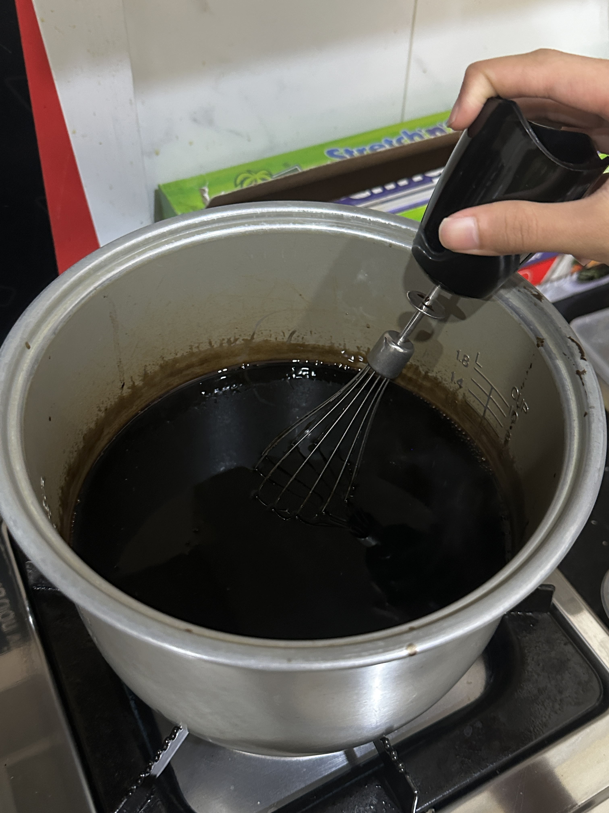
Step2: In a pot, stir constantly at low heat for a few minutes. When the grass jelly starts to become clear, glossy, thickened, and hard/heavy to stir, then turn off the heat. Quickly! pour the grass jelly into molds or bowls, let it COOL! (do not put in the fridge when it hot), then place it in the fridge for 1-2 hours to set.
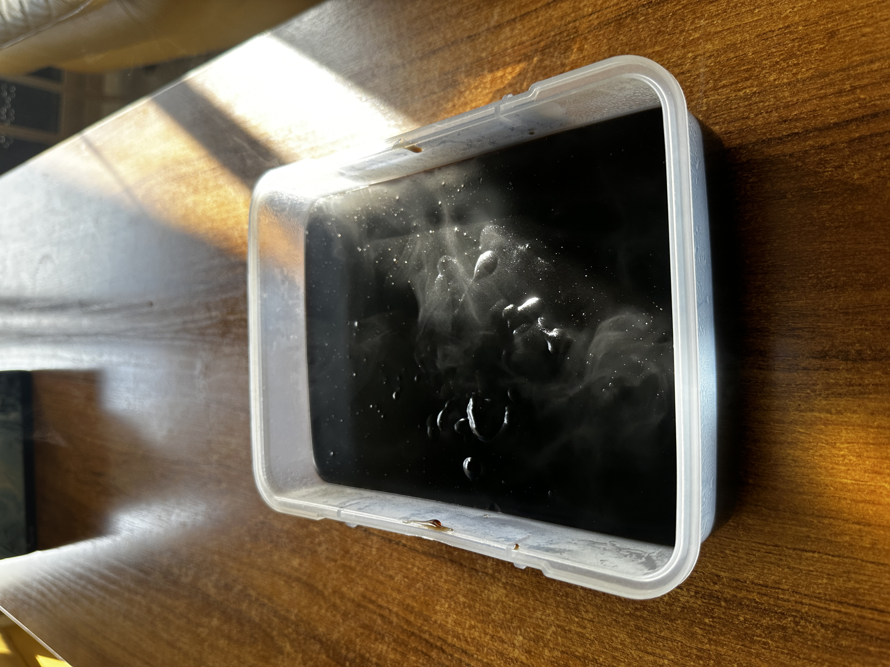
Step3: After 1-2 hours in the fridge, take it out and cut into small cubes.
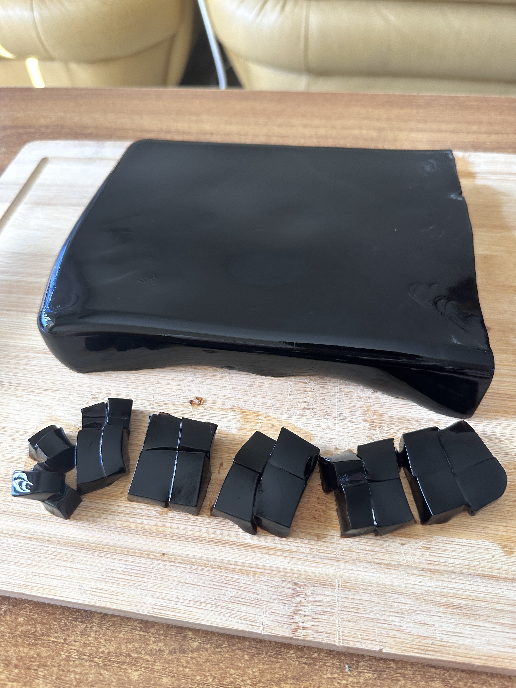
Step4: Now! We will doing the coconut milk to eat with glassjelly. Add 200ml of water to a pot, bring to a gentle boil, then add 70g of white sugar and cook until dissolved. Dissolve 10g of tapioca starch in a little water, then gradually add the dissolved starch to the sugar syrup, stirring constantly to prevent lumps. Cook until the tapioca starch is translucent, then add 500ml of coconut milk, 200ml of unsweetened milk, and 3g of salt, stirring well. Turn off the heat when the mixture just starts to boil again.
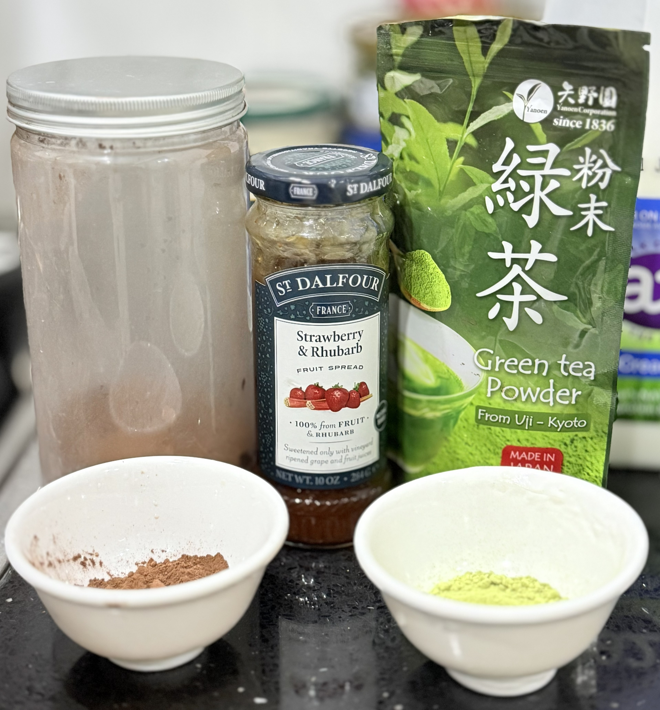
+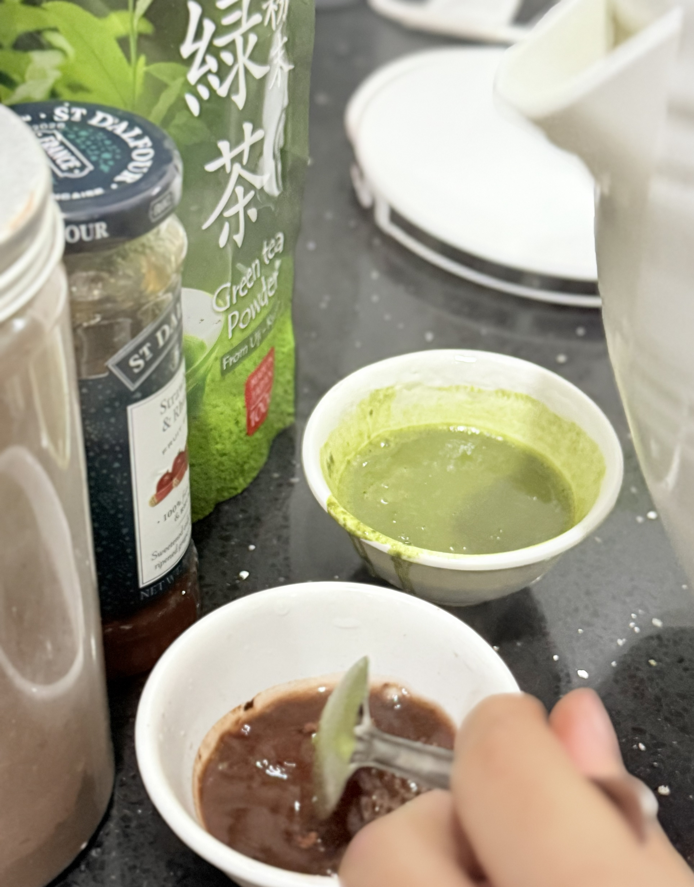
Step5: Put each flavour into the original molds and stir well.
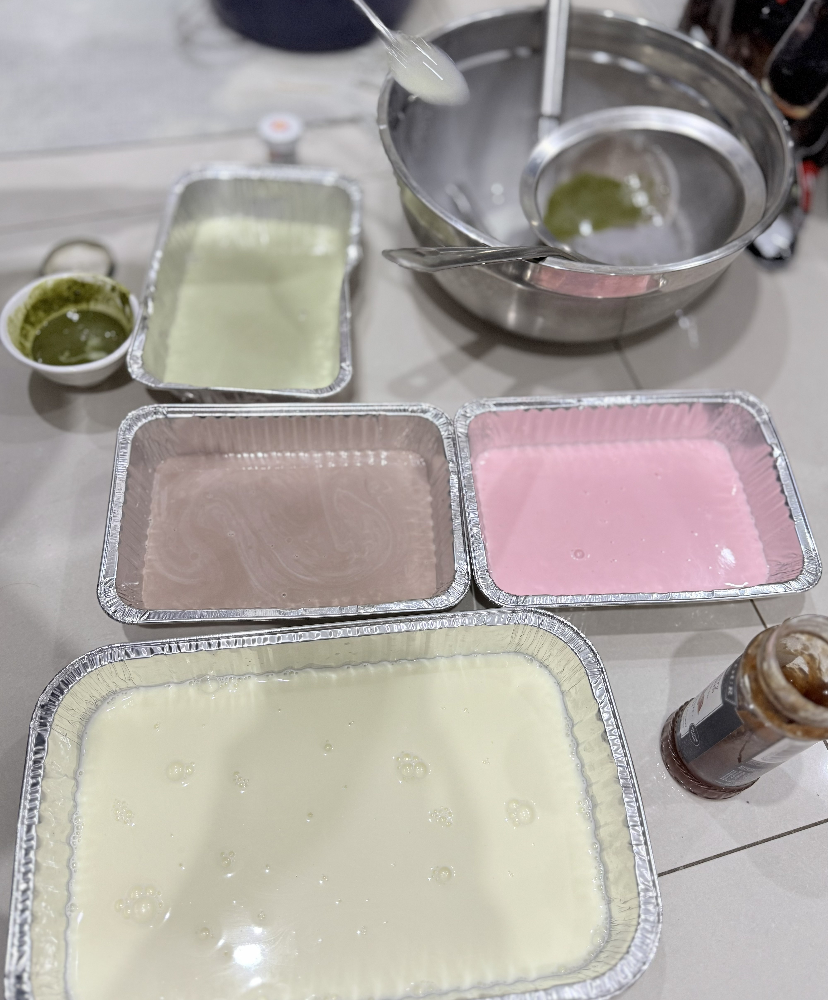
➞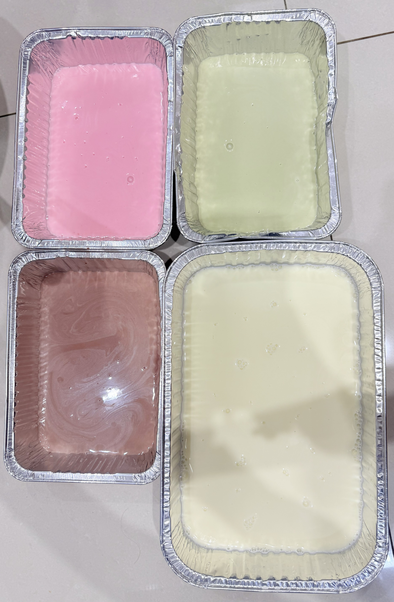
Step6: Let cool, then refrigerate for 2-3 hours until set.Then cut into small cubes.
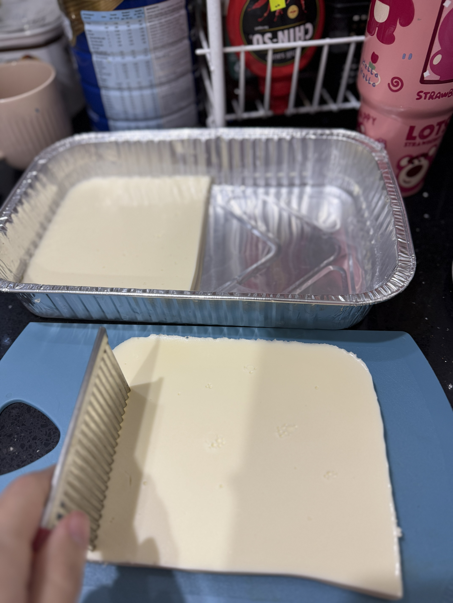
➞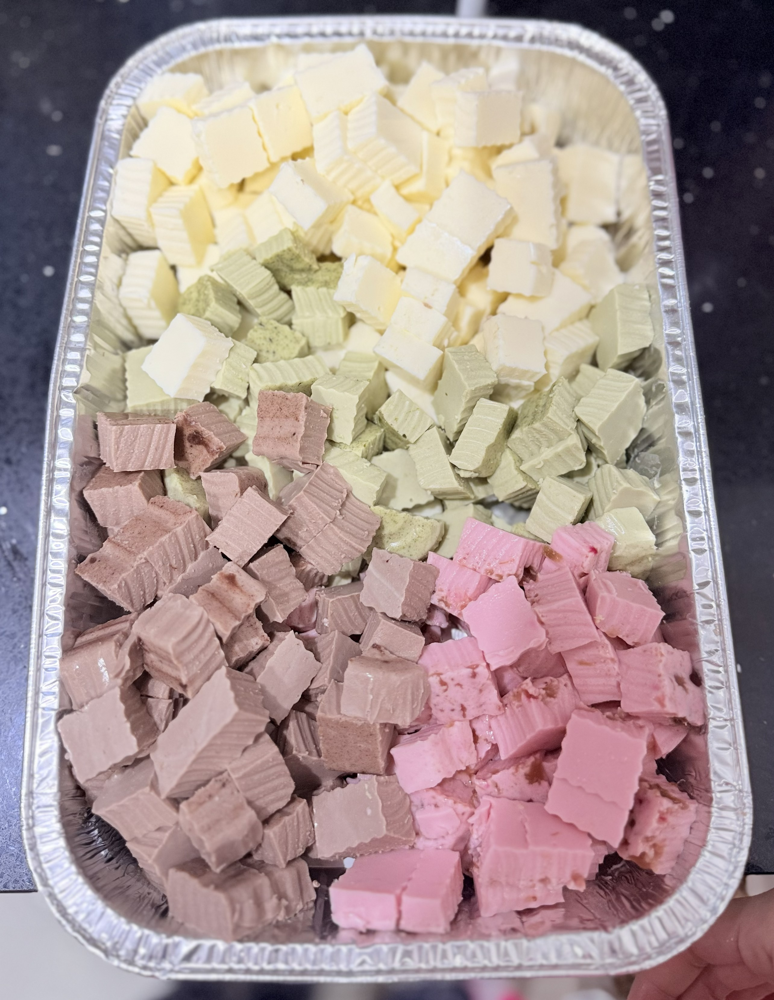
Step6: Boil 500 mL water with rock sugar for the syrup. Let it cool, then add lychee or longan in it.
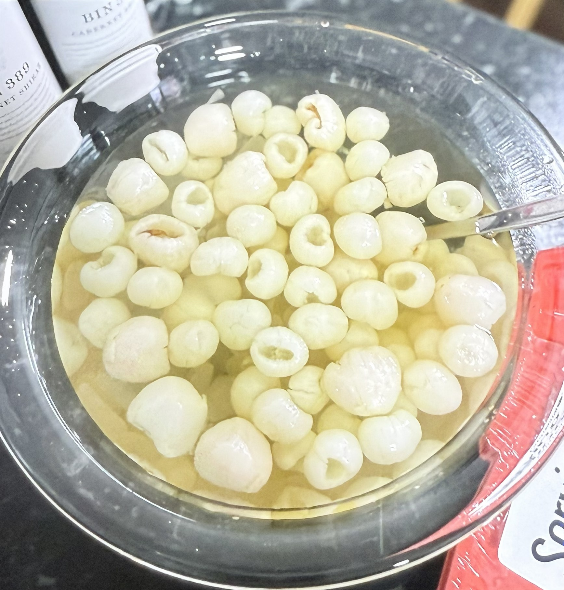
Finally, You put panna cotta cubes + syrup into a bowl. Top with roasted almond slices. Add ice if you prefer it cold, and serve for your family now!!
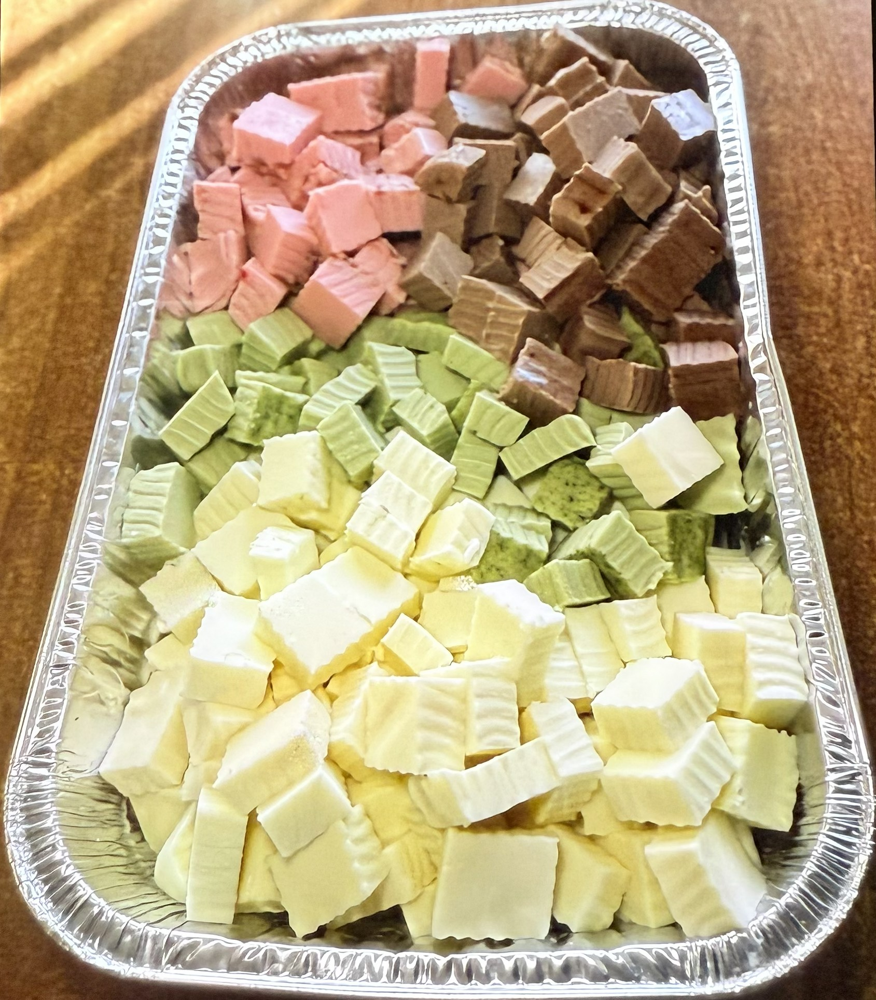
+ +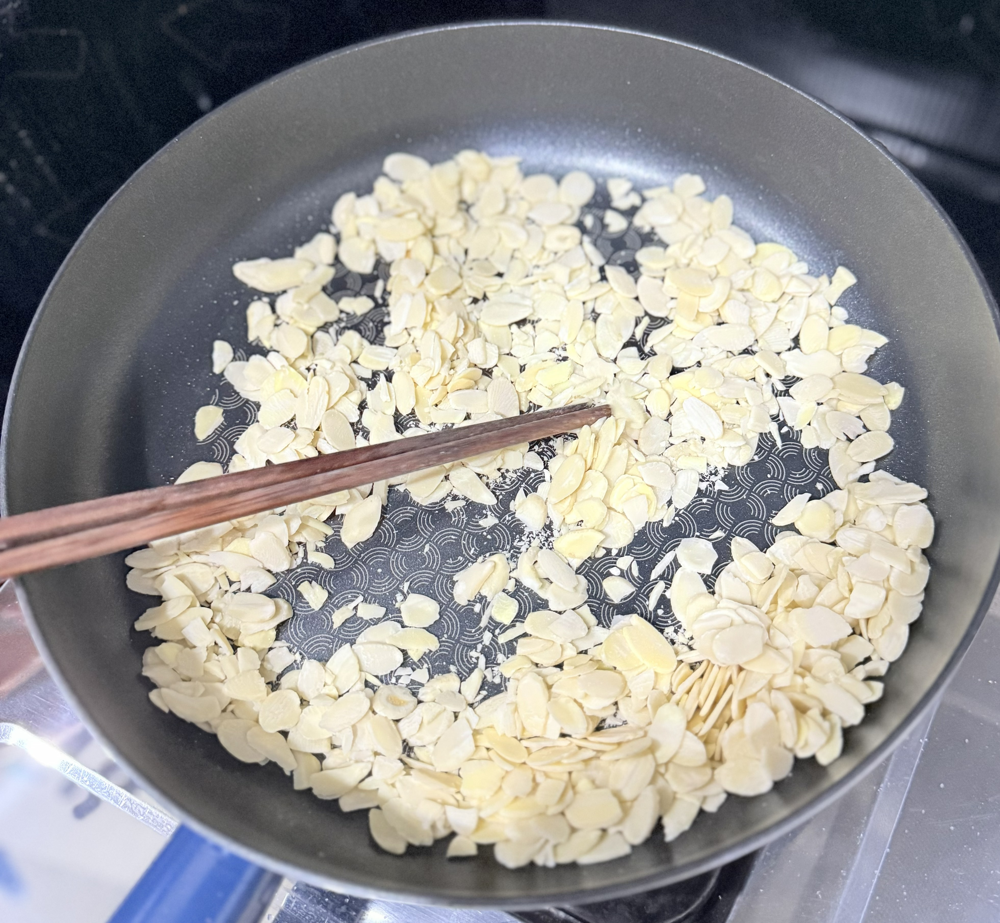
➞